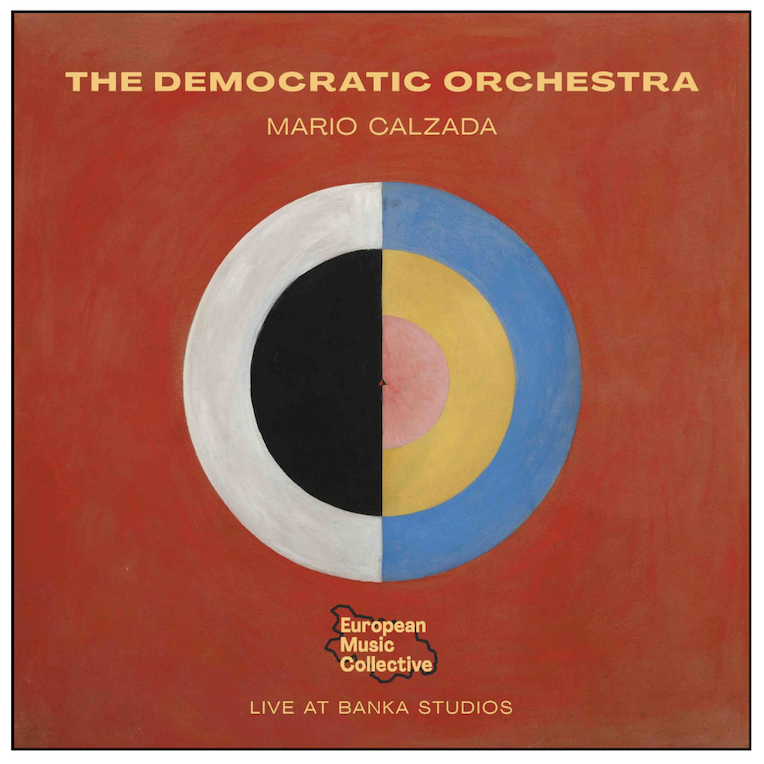
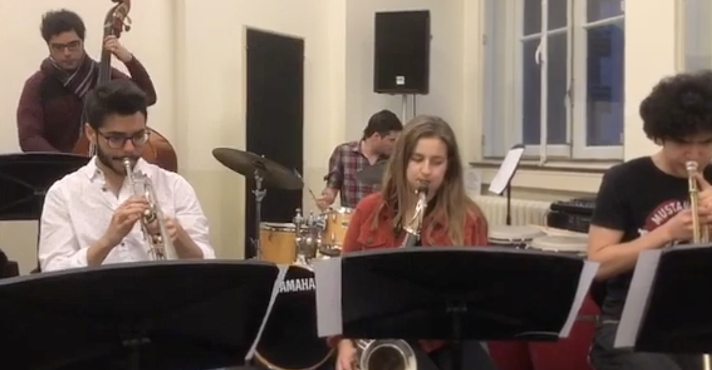
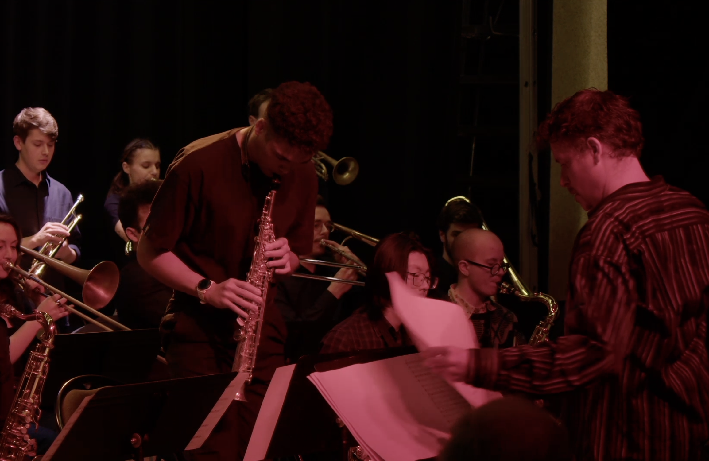

Projects
My work unfolds across composition, conduction, musical production, mixing, improvisation and education. Each project represents a long-term artistic inquiry rather than a fixed format.
Composer — Contemporary Music

The Democratic Orchestra
Multinational ensemble exploring freedom, voice and collective decision-making.

The Great Wave
Composition exploring improvised performance and recording inspired by Zen philosophy and sound as movement.

Colors and Forms
Multinational project exploring solo performances. Ongoing.

Composition projects
I work regularly on different compositional projects. Ongoing.
Improvisation

European Music Collective (EMC)
International collective focused on contemporary improvisation and collaborative authorship.

airkeychains
Improvisation-driven project exploring form, gesture and instant composition.
The Great Wave
Composition exploring improvised performance and recording inspired by Zen philosophy and sound as movement.
Jazz Composer and Band Leader

Mario Calzada - International trio
Jazz trio exploring the big tradition of Jazz Music and Mario Calzada´s compositions

Mario Calzada - International Quartet
Jazz Quartet exploring the big tradition of Jazz Music and Mario Calzada´s compositions

Mario Calzada - International Quintet
Jazz Quintet exploring the big tradition of Jazz Music and Mario Calzada´s compositions

Mario Calzada Small Ensemble
Small ensemble exploring Mario Calzada´s compositions and traditional jazz pieces for eight musicians

Mario Calzada Big Band Project
Mario Calzada’s Big Band project exploring original compositions in a large ensemble format, alongside selected arrangements.